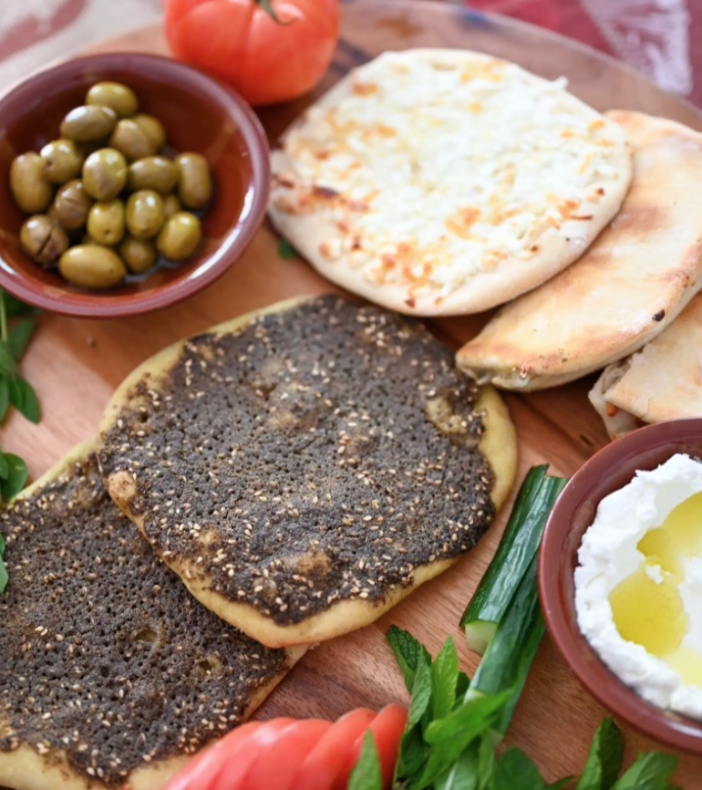

Traditional lebanese Manakeesh

Description
Ever been to a Lebanese resturaunt and seen a "pizza" on their menu? Ever wanted to have an unlimited supply of that at home?
I know I have.
Follow along and by the end of this, they'll be asking you to help them make it!
First off, we start with our Ingredients:
- Dough
- Olive oil
- Zaatar
- Tomatoes
- Cheese
- Pepper (optional)
Directions:
- Heat pan over medium high heat
- When hot, add onions, your selection of herbs and spices, and simmer
- Add ground beef and mix well
- When brown, consider it done!